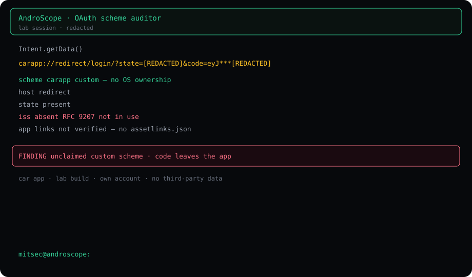
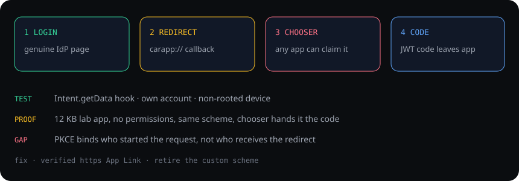

What was tested
Asset is a connected-car Android app, lab package com.car.app, current store build. Identity provider is the vendor’s own OIDC endpoint. The claimed issue is the app, not account creation on the IdP. Test account was the researcher’s own. No third-party data.
Runtime was a non-rooted phone, Termux, AndroScope with a Frida gadget in a lab build. The auditor hooked Intent.getData and onNewIntent during a normal login.
What the session saw
oauth auditor attached login genuine IdP page, own account callback carapp://redirect/login/?state=[REDACTED]&code=eyJ***[REDACTED] scheme carapp custom — no OS ownership state present iss absent RFC 9207 not in use app links not verified
The same pattern appeared in an earlier session the same day. Behaviour is consistent across logins.

Why the scheme is the bug
On Android a custom scheme has no owner. Any app can declare carapp://redirect. The OS then offers that app in the chooser, or hands it the URI outright. A verified App Link (https + autoVerify + assetlinks.json) is the opposite: only the signing certificate that owns the domain receives it.
The code value is an RS256 JWT. Anyone who receives it can read sub, the audience, the assurance level and the scope set without redeeming it. Scopes on this client include identity fields and vehicle fields (vin, mileage, cars). Lifetime is 300 seconds.
Proof, kept small
A 12 KB lab app, package com.lab.interceptor, no permissions, registered the same scheme. After a normal login on the genuine IdP page, Android showed the chooser. Selecting the lab app displayed the callback. The genuine car app never received the code, so the real login did not complete.
That is the demonstrated part. Token redemption against the vehicle backend is a separate step and is not reproduced on this page.
PKCE does not close it
The app uses PKCE (S256). PKCE binds a code to whoever started the authorization request. It does not authenticate whoever receives the redirect.
- Passive intercept. The genuine app started the login. PKCE helps only if the token endpoint rejects a missing or wrong verifier.
- Attacker-started login. A lab app opens the real IdP with the public client id, its own verifier, and the unclaimed scheme. The user sees the real domain. PKCE is satisfied. RFC 8252 §8.6 describes this. The fix is a redirect the OS can attribute to the genuine app.
Fix
Move the callback to a verified Android App Link. Remove the carapp://redirect intent-filter. Enforce PKCE on the app’s own code-exchange endpoint. Accept a callback only for a request the app itself started. Retiring the custom scheme on the IdP is defence in depth, not the claimed fix.